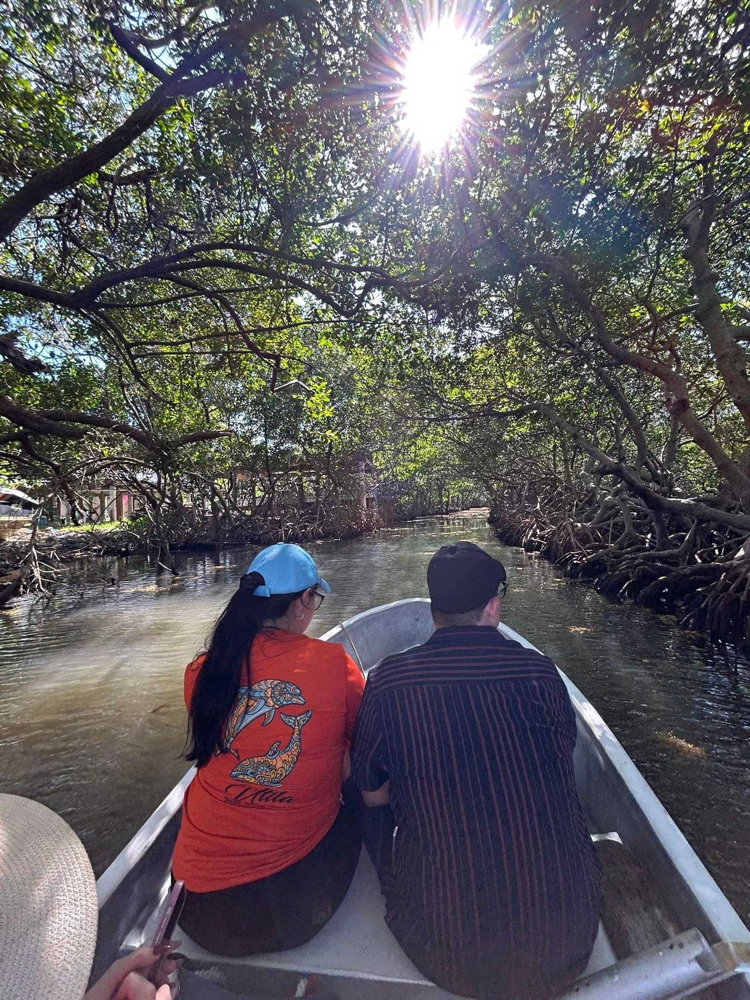

While most tourists head straight to West Bay or West End, true island adventurers know that Roatán's east side holds the island's authentic soul. The municipality of Santos Guardiola offers tranquil waters, untouched ecosystems, pirate history, and cultural charm far removed from commercial crowds.

1 Explore the Ancient Mangrove Tunnels
Glide through quiet water pathways framed by thick red mangrove canopies. These tunnels were hand-chopped centuries ago by early island settlers and pirates seeking hidden channels through the island. As you float underneath the emerald archways, you'll spot juvenile marine life, tropical birds, and experience a cool breeze shielded from the open ocean.
2 Swim in Hidden Mangrove Lagoons
Deep within the winding mangrove passages lie clear water pockets and sheltered natural lagoons. Tucked away from ocean currents, these calm swimming holes offer refreshing water surrounded by lush greenery. It is one of the most serene and peaceful places on the island to take a dip.
3 Dine at Over-the-Water Restaurants
The East End is famous for its authentic overwater dining spots. Enjoy fresh garlic shrimp, grilled lobster, or cold drinks directly over the blue sea. Places like On The Rocks, Hole In The Wall in Jonesville or spots in Oak Ridge offer real island hospitality, waterfront breeze, and genuine local flavors.
4 Island-Style Bar Hopping by Boat
Forget city buses or standard taxis—on the East End, the best bar crawl happens by boat! Hop on a local boat guide to cruise between laid-back, rustic shore bars across Jonesville and Oak Ridge. Pull up directly to the docks, meet local captains and expats, and sip a cold SalvaVida or rum punch while watching boats drift by.
5 Sightseeing from Jonesville to Historic Port Royal
Take a scenic boat ride through historic coastal communities. Start in Jonesville, glide past the colorful overwater houses of Oak Ridge (often called the "Venice of Roatán"), and continue east to Port Royal. Port Royal was once a famous 17th-century pirate stronghold where legendary figures like Henry Morgan anchored their fleets.
6 Swim with Gentle Nurse Sharks at Pigeon Cays
For an unforgettable encounter, take a boat trip out toward Pigeon Cays on the far eastern reef. Here in crystal-clear waters, you can snorkel alongside docile nurse sharks and abundant marine life in their natural habitat. It is a safe, awe-inspiring experience for swimmers of all ages.
Ready to Explore the East End?
Join us for a private, authentic tour guided by locals who know every channel, mangrove, and hidden gem.
Book Your East End Tour on WhatsApp